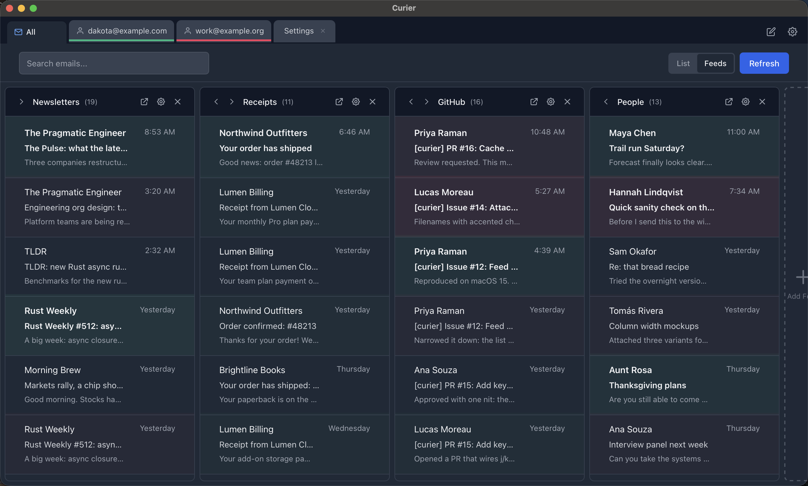

Your inbox, as a feed.
Curier is a small, open-source email client for macOS. It groups newsletters and subscriptions into feeds you can skim like a timeline, and keeps everything on your machine.
Apple Silicon. MIT licensed. Gmail today, Outlook in progress.

What it does
A short list, on purpose.
Feeds
Build feeds from rules like sender, subject, or tag. Newsletters and receipts land in their own columns instead of burying the mail that matters.
Tabs
Accounts, feeds, messages, and drafts open as tabs. Each tab carries its account color so you always know which inbox you are in.
Rules and tags
Tag messages by hand or let rules do it on sync. Feeds are built from tags, so the sorting you set up once keeps working.
Search and offline cache
Messages are cached in a local SQLite database, so search is instant and the app still opens when the network does not.
Dark mode
Follows the system theme. Email content renders on its own card so dark text stays readable whatever the message assumes.
Safe rendering
HTML mail is sanitized in Rust and shown in a sandboxed frame. Remote images and tracking pixels stay blocked until you choose to load them.
Your mail stays yours
There is no Curier server. Nothing about your account or your messages leaves your Mac except the requests the app makes directly to your mail provider.
Your own OAuth app
You create a Google Cloud project and Curier talks to Gmail with your credentials, over OAuth with PKCE. It asks for read and send permission only, never the ability to delete or modify your mailbox.
Keychain for secrets
Client credentials and tokens live in the macOS Keychain. Nothing secret is written to a plain file.
Local cache, local rules
The message cache, your tags, and your feed rules are files on your disk. Delete the app's data folder and they are gone.
Readable source
Everything, including the security notes and the test suite, is in the repository under the MIT license.
Install
Builds are not notarized, so macOS will call the app damaged on first launch. It is not; the quarantine flag just needs clearing.
- Download the latest
.dmgfrom the releases page and drag Curier into Applications. - Clear the quarantine flag once:
xattr -dr com.apple.quarantine /Applications/Curier.app - Create Google OAuth credentials by following the Gmail setup guide, then add your account inside Curier.
Prefer to build it yourself? Clone the repo and run npm install then npm run tauri build. You will need Node and Rust.